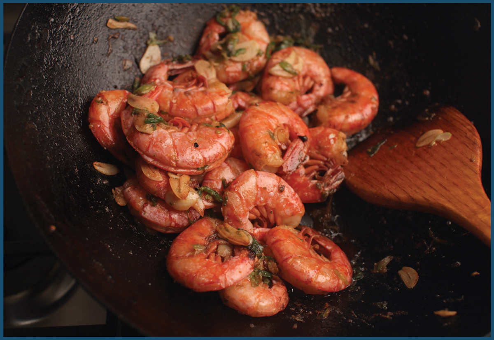
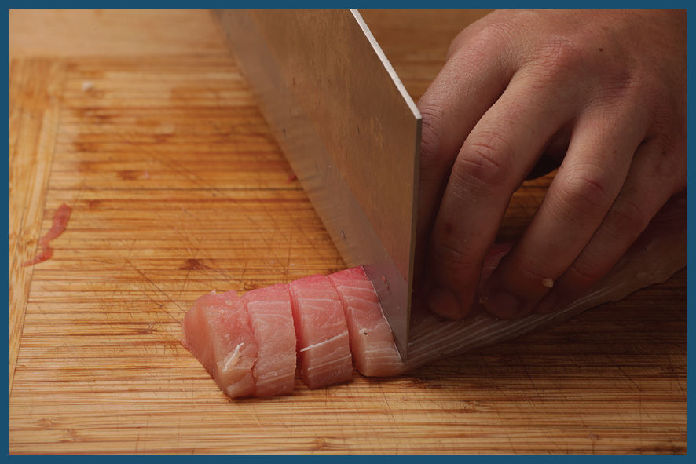
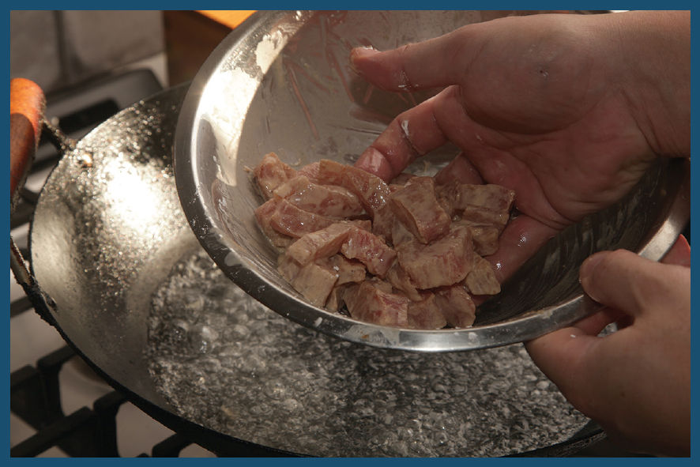
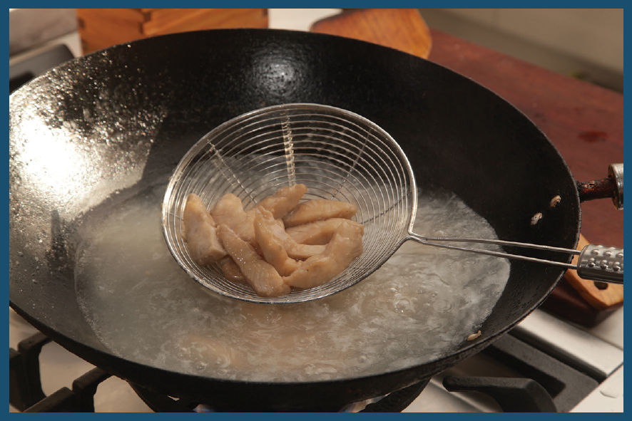

While I was a teenager growing up in New York, my father worked and lived in Boston during the week. On most weekends he’d come back down to New York, but several times a year we’d drive up to Boston instead. Those trips to Boston inevitably included two things: a trip to the Bertucci’s in Harvard Square (I was, and still am, a sucker for street performers and family-friendly pizza restaurants), and a visit to East Ocean City in Boston’s Chinatown. Aside from being home to the finest dry-style beef chow fun in the world (at least according to my little sister, Pico), they also sold pristine seafood that you selected from the banks of giant saltwater tanks at the front of the restaurant. Whatever we picked—fresh tautogs, spider crabs with 5-foot leg spans, or, in the summertime, lobsters—would get scuttled off into the kitchen to meet its maker while we sat at our table picking at razor clams with black bean sauce, shrimp-paste-stuffed hot green chiles, and live Maine shrimp stir-fried plain in the shell with a dish of mild soy sauce for dipping the bodies into as you sucked the juices out of the heads.
I now live on the opposite coast from Boston (and my dad), but I still have access to fresh seafood, and there are few better ways to showcase it than by giving it a spin in the wok.
Fish can be tricky to stir-fry, as it tends to be far more delicate than meat or poultry, and if you’re not careful with it, it will fall apart in the wok. There are two keys to ensuring that your fish stays intact during a stir-fry.
The first is to pick the right kind of fish. Firm-fleshed white fish, such as sea bass, striped bass, grouper, mullet, blackfish (wrasse), mahimahi, and halibut, are all excellent choices. Avoid fish that flake excessively when cooked, such as cod and pollock, or flat delicate fish like fluke, flounder, or sole. Just as with meat, fish should be sliced against the grain into bite-sized pieces, though these slices should be a little bit thicker.

The second is technique, and when I stir-fry fish, I precook it using the same water-velveting technique that works so well on chicken and pork.

To water-velvet fish, I start by marinating it with a mixture of Shaoxing wine, white pepper, light soy sauce, oil, egg whites, and cornstarch. Because fish has such delicate flesh, I skip the washing and squeezing steps I typically include with poultry or meat. It’s important that the fish be coated in the cornstarch mixture and be neither too wet nor too dry. There should be no liquid pooled in the bowl, and there should be no dry cornstarch on the surface of the fish. Depending on the fish, sometimes I have to adjust the consistency by either draining off excess liquid or adding a small splash or water to the bowl, as the case demands.

Once marinated, the fish takes a quick swim in simmering water until it’s barely cooked through. The starchy layer on the surface of the fish should be slick and translucent.
Fish velveted in this way can then be stir-fried just like velveted chicken or pork.